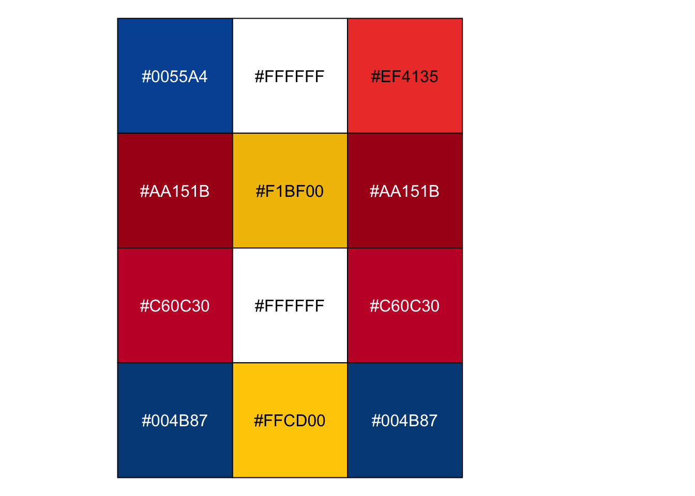

library(scales)
my_colors <- c("#1F2F57", # Volkswagen Space Cadet
"#6091C3", # Volkswagen Silver Lake Blue
"#001E50", # Volkswagen Navy
"#041f4a", # The Guardian Brand Dark
"#052962", # The Guardian Brand Main
"#506991", # The Guardian Brand Pastel
"#236925", # The Guardian Green Dark
"#3db540", # The Guardian Green Main
"#ffffff",
"#ffe500", # The Guardian Highlight main
"#ffbb50") # The Guardian Highlight dark
scales::show_col(my_colors, ncol = 3)Themes, Colors and Extensions
Themes
HTML documents rendered with Quarto use Bootstrap 5 by default.
Websites/Blogs can use any of the 25 Bootswatch themes included with Quarto. For example, this website uses the cosmo theme. See the 25 themes here and the .scss theme files are here.
- You can also create your own themes.
- Quickly get your Quarto HTML theme in order - posit::conf(2023), see
.scssfiles here
HTML theme on this website
_quarto.yml
format:
html:
theme:
- cosmo
- theme_custom.scss
css: styles.css # empty
fontsize: 1.1em
toc: truetheme_custom.scss
/*-- scss:defaults --*/
// Sass variables for websites, books, manuscripts, revealjs presentations
$navbar-bg: #052962;yeti theme could be an alternative. The theme has “Open Sans” font (default).
Colors
flags01 <- c("#008C45", # Italy flag
"#F4F5F0", # Italy flag
"#CD212A", # Italy flag
"#FFFFFF", # Faroe Islands flag
"#0165BF", # Faroe Islands flag
"#EE2436", # Faroe Islands flag
"#078930", # Ethiopia flag
"#FCDD09", # Ethiopia flag
"#DA121A", # Ethiopia flag
"#0F47AF", # Ethiopia flag
"#078930", # Ethiopia flag
"#FCDD09") # Ethiopia flag
scales::show_col(flags01, ncol = 3)flags02 <- c("#0055A4", # France flag
"#FFFFFF", # France flag
"#EF4135", # France flag
"#AA151B", # Spain flag
"#F1BF00", # Spain flag
"#AA151B", # Spain flag
"#C60C30", # Denmark flag
"#FFFFFF", # Denmark flag
"#C60C30", # Denmark flag
"#004B87", # Sweden flag
"#FFCD00", # Sweden flag
"#004B87") # Sweden flag
scales::show_col(flags02, ncol = 3)
flags03 <- c("#C8102E", # Norway flag
"#FFFFFF", # Norway flag
"#003087", # Norway flag
"#ffffff",
"#ffffff",
"#ffffff",
"#ffffff",
"#ffffff",
"#ffffff",
"#ffffff",
"#ffffff",
"#ffffff")
scales::show_col(flags03, ncol = 3)Extensions
On this website I use the following extensions:
quarto-ext/lightbox, version 0.1.9
quarto-ext/fontawesome, version 1.2.0
See here a List of Quarto Extensions.